Code
library(vars)
library(car)
library(gridExtra)
library(tsDyn)
library(tidyverse)
library(WDI)
library(urca)Die folgenden Packages wurden für das Erstellen dieses Dokuments verwendet:
library(vars)
library(car)
library(gridExtra)
library(tsDyn)
library(tidyverse)
library(WDI)
library(urca)Bei einem Autoregressiven Prozess erster Ordnung AR(1) hängt der Wert der aktuellen Periode \(y_t\) von dem Wert der Vorperiode \(y_{t-1}\), einer Konstanten \(\alpha\) und einem Störterm \(u_t\) ab. Der Einfluss der Vorperiode wird über den Faktor \(\rho\) gesteuert. Liegt dieser zwischen \(-1\) und \(1\) spricht man von einem Stationären Prozess. Das bedeutet, dass der Prozess immer wieder zu seinem Mittelwert, welcher bei \(\frac{\alpha}{1 - \rho}\) liegt, zurückkehrt.
Die Funktionsvorschrit lautet also \(y_t = \alpha + \rho y_{t-1} + u_t\) mit \(|\rho| < 1\) und wird in diesem Beispiel simuliert
n <- 150
alpha <- 0
rho <- .8
u <- rnorm(n, mean = 0, sd = 5)
y0 <- numeric(n)
y0[1] <- 10
for(t in 2:n){
y0[t] <- alpha + rho * y0[t-1] + u[t]
}
y <- y0[31:130]
#plot(y0, type = "l"); abline(h = alpha / (1 - rho), lty = 2)
plot(y, type = "l"); abline(h = alpha / (1 - rho), lty = 2)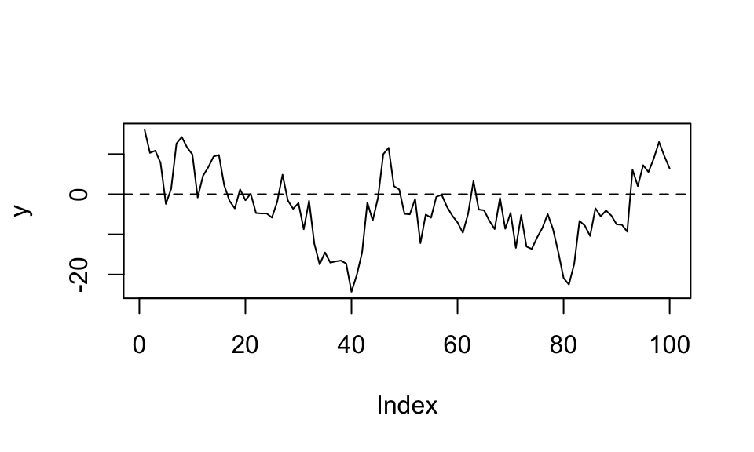
Ein AR(1) Prozess kann auch als MA(\(\infty\)) Prozess dargestellt werden: \(y_t = \frac{\alpha}{1-\rho}+\sum_{j=0}^{\infty}\rho^j u_{t-j}\).
ACF & PACF Anhand der Autokorrelationsfunktion (ACF) kann festgestellt werden, welche Lags signifikante Korrelationen aufweisen. Dadruch können Muster und Eigenschaften der Zeitrehe aufgezeigt werden.
Nachfolgend wird zuerst eine selbstberechnete ACF gezeigt und dann der Output der acf() Funktion.
h_max <- 20
acf_list <- numeric(length = h_max)
for(h in 1:h_max){
acf_list[h] <- cor(y[-c(1:h)], lag(y, n = h)[-c(1:h)])
}
par(mfrow = c(1, 2))
plot(acf_list, type = "h"); abline(h = 0, lty = 1)
acf(y) # zum Vergleich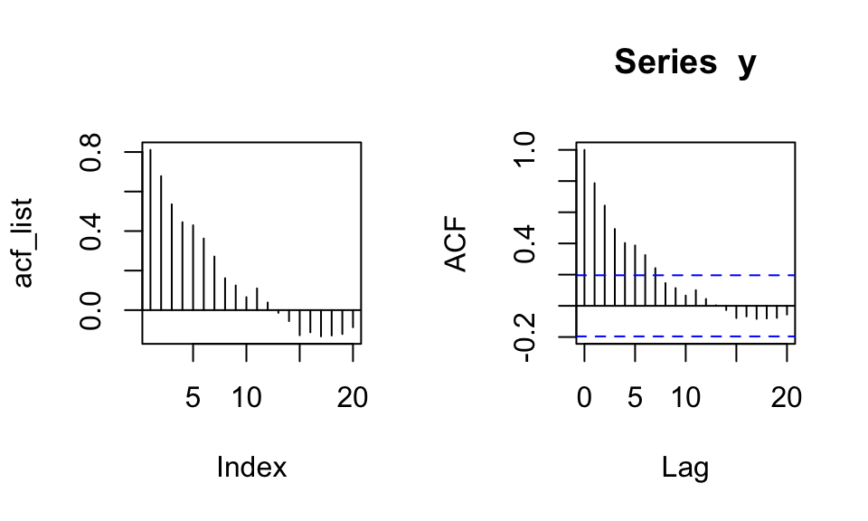
Die partielle Autokorrelationsfunktion (PACF) zeigt den direkten Einfluss von Periode \(t-h\) auf Periode \(t\). Die Effekte der dazwischenliegenden Perioden werden herausgerechnet. Bsp.: Eine Korrelation von \(y_t\) und \(y_{t-2}\) kann zustande kommen, weil \(y_{t-2}\) einen direkten Einfluss auf \(y_t\) hat, oder weil \(y_{t-2}\) einen Einfluss auf \(y_{t-1}\) hat welches dann wiederum einen Einfluss auf \(y_t\) hat.
Nachfolgend wird zuerst eine selbstberechnete PACF gezeigt und dann der Output der pacf() Funktion.
h_max <- 20
pacf_list <- numeric(h_max)
for(i in 1:h_max){
eq <- as.formula(paste("y ~", paste("lag(y,", 1:i, ")", collapse = "+")))
coef <- coef(lm(eq))[i+1]
pacf_list[i] <- coef
}
par(mfrow = c(1, 2))
plot(pacf_list, type = "h"); abline(h = 0, lty = 1)
pacf(y) # Zum Vergleich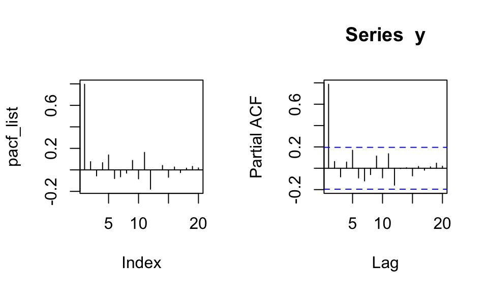
Die PACF wird mit steigendem Lag \(h\) immer ungenauer, da ein immer größeres Regressionsmodell berechnet werden muss.
Bei einem Moving Average Prozess erster Ordnung MA(1) hängt der Wert der aktuellen Periode \(y_t\) von dem Störterm der Vorperiode \(y_{t-1}\), einer Kostanten \(\mu\) sowie einem Störterm \(u_t\) ab. Der Einfluss der Vorperiode wird über ein \(\theta\) gesteuert. Dieses wird typischerweise zwischen \(-1\) und \(1\) gewählt. Im Gegensatz zum AR(1) Prozess ergibt sich für \(|\theta| > 1\) jedoch auch ein stationärer Prozess.
\(y_t = \mu + u_t + \theta u_{t-1}\) mit \(|\theta|<1\) und \(\{u_t\}\) als weißem Rauschen
n <- 150
mu <- 5
theta <- 1.8
u <- rnorm(n, mean = 0, sd = 5)
y0 <- numeric(n)
y0[1] <- 10
for(t in 2:n){
y0[t] <- mu + u[t] + theta * u[t-1]
}
y <- y0[31:130]
plot(y, type = "l")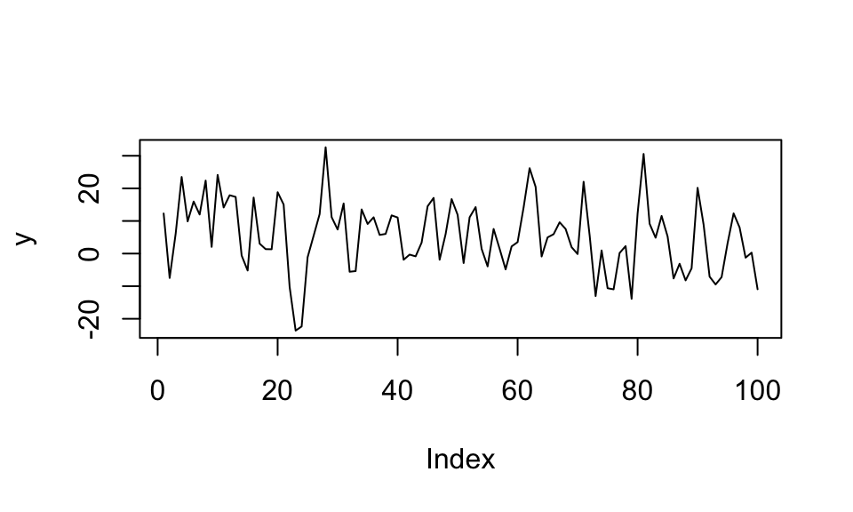
Ein MA(1) Prozess kann auch als AR(\(\infty\)) Prozess dargestellt werden: \[y_t = \mu(1 - \theta + \theta^2 - \theta^3 + …) + \theta y_{t-1} - \theta^2 y_{t-2} + \theta^3 y_{t-3} - … + u_t = \mu\sum_{j=0}^{\infty}(-1)^{j}\theta^j+\sum_{j=1}^{\infty}(-1)^{j-1}\theta^j + u_t\]
ACF & PACF ACF bricht nach einem Lag ab, PACF klingt exponentiell ab wenn \(|\theta|<1\).
par(mfrow = c(1, 2))
acf(y)
pacf(y)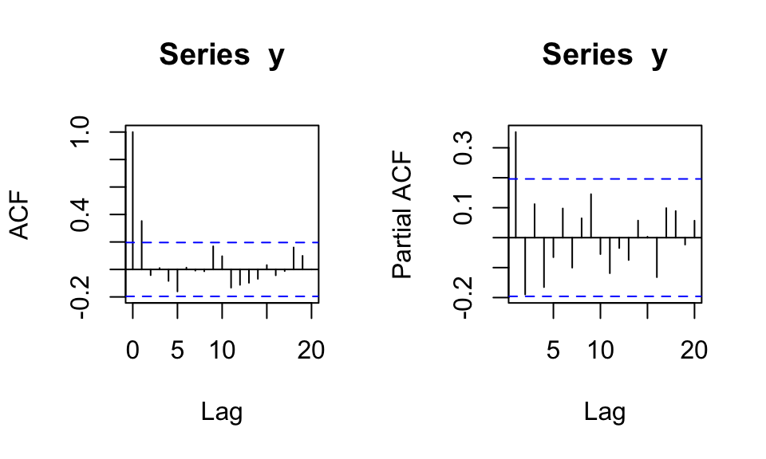
Bei einem autoregressiven Prozess zweiter Ordnung AR(2) hängt der Wert der aktuellen Periode \(y_t\) von den Werten der beiden davorliegenden Perioden \(y_{t-1}\) und \(y_{t-2}\) ab. Hierbei gilt die Stationaritätsbedingung \(|\rho_1 + \rho_2| < 1\).
\(y_t = \alpha + \rho_1 y_{t-1} + \rho_2 y_{t-2} + u_t\)
n <- 150
alpha <- 5
rho1 <- 1.2
rho2 <- -0.5
u <- rnorm(n, mean = 0, sd = 5)
y0 <- numeric(n)
y0[1] <- 0
y0[2] <- 0
for(t in 3:n){
y0[t] <- alpha + rho1 * y0[t-1] + rho2 * y0[t-2] + u[t]
}
y <- y0[31:130]
plot(y, type = "l")Hier ein Beispiel mit jährlichen Daten des Bruttoinlandsprodukts Deutschlands zwischen 1970 und 2020.
#WDIsearch("gdp")
#WDIsearch('gdp.*capita.*constant')
gdp_de <- WDI(indicator = "NY.GDP.PCAP.KD", country = "DE", start = "1970", end = "2020") %>%
select(year, gdp_per_capita = NY.GDP.PCAP.KD) %>%
mutate(gdp_per_capita_log = log(gdp_per_capita),
diff = gdp_per_capita_log - lag(gdp_per_capita_log, n = 1, order_by = year))
gdp_de %>%
select(year, gdp_per_capita, diff) %>%
drop_na() %>%
pivot_longer(cols = -year) %>%
ggplot(aes(x = year, y = value))+
geom_line()+
facet_wrap(~name, scales = "free_y")+
theme_bw()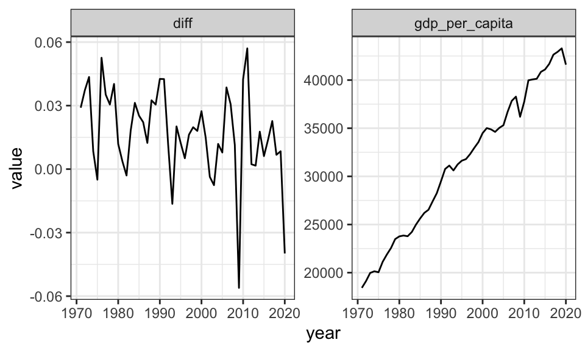
par(mfrow = c(1, 2))
acf(drop_na(gdp_de)$diff)
pacf(drop_na(gdp_de)$diff)In der ACF und PACF lassen sich zwar Korrelationen erkennen, allerdings sind diese alle Werte nicht signifikant. Daher ist keine konkrete Aussage zu etwaigen Konjunkturzyklen zu treffen.
Im folgenden wird der Datensatz co2 verwendet. Es werden für die Auswertung aus Gründen der Übersichtlichkeit nur die letzten 10 Jahre (= 120 Beobachtungen) betrachtet. Es soll gezeigt werden, welchen Unterschied verschiedene Lagordnungen haben können.
c02_small <- window(co2, start = 1987)
# Set the layout to have 2 rows and 2 columns
par(mfrow = c(3, 3),mar=c(3,3,3,2), las=.5)
# 1. Zeile - data
plot(c02_small, main = "Rohdaten (monatlich)")
plot(diff(c02_small, lag = 1), type = "l", main = "Diff (Lag 1 Monat)", ylab = "Growthrate")
plot(diff(c02_small, lag = 12), main = "Diff (Lag 12 Monate)", ylab = "Growthrate")
# 2. Zeile - ACF
acf(c02_small, main = NA)
acf(diff(c02_small, lag = 1), main = NA)
acf(diff(c02_small, lag = 12), main = NA)
# 3. Zeile - PACF
pacf(c02_small, main = NA)
pacf(diff(c02_small, lag = 1), main = NA)
pacf(diff(c02_small, lag = 12), main = NA)Die erste Zeile zeigt jeweils den Plot der Daten, die zweite Zeile die ACF und die dritte Zeile die PACF.
Bei den Rohdaten handelt es sich um eine nichtstationäre Zeitreihe. Dementsprechend ist die ACF auch überall positiv. Bildet man die Differenzen zum Vormonat, so wird die Zeitreihe stationär, zeigt aber immernoch eine ausgeprägte Saisonfigur. Diese spiegeln sich auch in der ACF und PACF wieder. Erst wenn die Differenzen über 12 Monate gebildet werden, erhält man eine stationäre Zeitreihe ohne Saisonfiguren. Die ACF klingt nun regelmäßig ab.
Damit eine Zeitreihe stationär ist, müssen die Lösungen der z-Transformation außerhalb des Einheitskreises liegen. Man spricht in diesem Zusammenhang auch von dem Stationaritätsdreieck.
Für ein AR(1) Modell heißt das, dass für einen stationören Prozess \(|\rho| < 1\) sein muss. Bei einem AR(2) Modell müssen \(|\rho_1 + \rho_2| < 1\) sein. Es soll hier illustriert werden, was bereits ein kleiner Unterschied in einem der Parameter bewirken kann. Für \(|\rho_1 + \rho_2| = 1\) tritt der Unit-Root Fall ein, welcher im Plot rechts zu sehen ist. \(|\rho_1 + \rho_2| > 1\) würden eine explodierende Zeitreihe erzeugen.
n <- 150
alpha <- 5
rho1a <- 1.2
rho2a <- -0.3
rho1b <- 1.2
rho2b <- -0.2
u <- rnorm(n, mean = 0, sd = 5)
y0a <- numeric(n)
y0a[1] <- 0
y0a[2] <- 0
y0b <- numeric(n)
y0b[1] <- 0
y0b[2] <- 0
for(t in 3:n){
y0a[t] <- alpha + rho1a * y0a[t-1] + rho2a * y0a[t-2] + u[t]
y0b[t] <- alpha + rho1b * y0b[t-1] + rho2b * y0b[t-2] + u[t]
}
ya <- y0a[31:100]
yb <- y0b[31:100]
par(mfrow = c(1, 2))
plot(ya, type = "l", main = paste("Rho1=", rho1a, ", Rho2=", rho2a))
plot(yb, type = "l", main = paste("Rho1=", rho1b, ", Rho2=", rho2b))Das Ziel des Box-Jenkins Ansatzes ist das Entwickeln eines ARMA(p, q) Modells (ARIMA Modelle werden hier ausgeklammert, diese können durch Differenziation in ARMA Modelle umgewandelt werden). Der Ansatz hat dabei einige Schritte, welche aufeinander aufbauen:
Das Vorgehen wird anhand des AirPassengers Datensatz gezeigt.
str(AirPassengers) Time-Series [1:144] from 1949 to 1961: 112 118 132 129 121 135 148 148 136 119 ...plot(AirPassengers)Im vorherigen Plot ist sehr leicht erkennbar, dass die Zeitreihe nicht stationär ist und eine ausgepägte Saisonalität aufweist. Wie bei fast allen ökonomischen Zeitrehen wird daher zuerst logarithmiert und im Anschluss die 12. Differenzen gebildet. Das Ergebnis ist die logarithmierte Wachstumsrate zum Vorjahresmonat.
AirPass_trans <- AirPassengers %>%
log() %>%
diff(lag = 12)
AirPass_trans %>%
plot()Um die Ordnungen des AR() und MA() Teils zu finden, können die Autokorrelationsfunktion und Partielle Autokorrelationsfunktion hilfreich sein.
par(mfrow = c(1, 2))
acf(AirPass_trans)
pacf(AirPass_trans)Allerdings kann eine Identifikation über diese Plots subjektiv und generell schwierig sein. Eine bessere Alternative stellt die Identifikation über Informationskriterien dar. Hierbei werden insbesondere die Akaike, Bayesian und Hannah-Quinn Informationskriterien unterschieden. Für diese Auswertung wird das Bayesian Kriterium BIC verwendet.
Die Informationskriterien verwenden die Residualvarianz eines ARMA(p,q) Modells und korrigieren diese anhand der Modellordnung. Das ist notwendig, da größere Modelle sich besser an die Daten anpassen und somit automatisch zu einer kleineren Residualvarianz führen. Die Modellordnung (p,q), welche das minimale Informationskriterium aufweist, wird ausgewählt.
pq_values <- expand.grid(p = 1:10, q = 1:10)
best_bic <- Inf
best_model <- NULL
for(i in 1:nrow(pq_values)){
p <- pq_values[i,1]
q <- pq_values[i,2]
#print(paste("p: ", p, " q: ", q, sep = ""))
arma_model <- arima(AirPass_trans, order = c(p, 0, q))
bic <- BIC(arma_model)
if (bic < best_bic) {
best_p <- p
best_q <- q
best_bic <- bic
best_model <- arma_model
}
}
paste("Best p: ", best_p, " | Best q: ", best_q, sep = "")[1] "Best p: 4 | Best q: 2"#best_model
#best_bicFür manche Kombinationen (z.B. p = 7, q = 4) gibt es Warnhinweise. Wieso? Was bedeuten die?
Nach BIC bestes Modell: p = 4, q = 2
Zum Vergleich: Das AIC Kriterium gibt als bestes Modell: p=10, q=7 (Achtung, es wurde auch nur bis p,q=10 untersucht!)
Nun werden anhand der vorher bestimmten Modellordnung die Parameter geschätzt. Die Schätzung eines AR() Modells ist dabei ziemlich einfach, da alle Daten vorhanden sind. Die Schätzung eines MA() Modells hingegen ist schwieriger, da die \(u_t\)s nicht beobachtet werden, sondern ebenfalls erst geschätzt werden müssen. Dafür wird zuerst ein AR(r = max(p,q)) geschätzt und die Residuen extrahiert. Daraufhin kann das ARMA() Modell geschätzt werden. Eventuell können nun erneut die Residuen extrahiert und für eine neue genauerere Schätzung verwendet werden.
best_model <- arima(AirPass_trans, order = c(best_p, 0, best_q))
best_model
Call:
arima(x = AirPass_trans, order = c(best_p, 0, best_q))
Coefficients:
ar1 ar2 ar3 ar4 ma1 ma2 intercept
0.6634 -0.6166 0.2620 0.3338 -0.0859 1.0000 0.1152
s.e. 0.0843 0.1018 0.0994 0.0834 0.0292 0.0317 0.0169
sigma^2 estimated as 0.001409: log likelihood = 242.77, aic = -469.55AR() Modelle (hier AR(2)) können direkt mit OLS geschätzt werden.
y <- as.numeric(AirPass_trans)[-c(1, 2)]
X <- cbind(rep(1, length(AirPass_trans)),
lag(as.numeric(AirPass_trans), n = 1),
lag(as.numeric(AirPass_trans), n = 2))[-c(1, 2),]
solve(t(X) %*% X) %*% t(X) %*% y [,1]
[1,] 0.02604782
[2,] 0.54876013
[3,] 0.23656239# zum Vergleich
coef(arima(AirPass_trans, order = c(2, 0, 0))) ar1 ar2 intercept
0.5540192 0.2378039 0.1150271 Wieso unterscheiden sich die Schätzwerte, insbesondere der Intercpet?
Neben OLS kann auch eine Maximum-Likelihood Schätzung angewandt werden.
\(\text{loglik} = -\frac{n}{2} \log(2 \pi \sigma^2) - \frac{1}{2 \sigma^2} \sum \left( y - \text{intercept} - \text{ar1} \cdot \left(0, y_{t-1}, \ldots, y_{1}\right) - \text{ar2} \cdot \left(0, 0, y_{t-2}, \ldots, y_{1}\right) \right)^2\)
ar2_loglik <- function(params, y) {
intercept <- params[1]
ar1 <- params[2]
ar2 <- params[3]
sigma <- params[4]
n <- length(y)
loglik <- -n/2 * log(2 * pi * sigma^2) - 1/(2 * sigma^2) * sum((y - intercept - ar1 * c(0, head(y, -1)) - ar2 * c(0, 0, head(y, -2)))^2)
return(-loglik)
}
initial_values <- c(mean(y), 0, 0, sd(y))
mle_result <- optim(par = initial_values, fn = ar2_loglik, y = as.numeric(AirPass_trans))
intercept_hat <- mle_result$par[1]
ar1_hat <- mle_result$par[2]
ar2_hat <- mle_result$par[3]
sigma_hat <- mle_result$par[4]
paste("intercept_hat =", round(intercept_hat, 2), "| ar1_hat =", round(ar1_hat, 2), "| ar2_hat =", round(ar2_hat, 2), "| sigma_hat =", round(sigma_hat, 2))[1] "intercept_hat = 0.03 | ar1_hat = 0.55 | ar2_hat = 0.23 | sigma_hat = 0.04"Nun da das Modell geschätzt ist, muss noch überprüft werden, ob es überhaupt sinnvoll erscheint. Dazu können in einem ersten Schritt insbeonsdere die Plots der Residuen und deren Dichte herangezogen werden. Die Residuen sollten sich wie normalverteiltes weißes Rauschen ohne Autokorrelation verhalten. Sollte doch noch Autokorrelation in den Residuen vorhanden sein, so ist wahrscheinlich das Modell falsch spezifiert, denn das Modell sollte ja die gesamte Autokorrelation erklären.
par(mfrow = c(1, 2))
plot(resid(best_model), main = "Residuen", ylab = "")
plot(density(resid(best_model)), main = "Dichte", ylab = "")Neben den teilweise subjektiv einzuschätzenden Plots gibt es auch den Box-Pierce und Ljung-Box Test, welche auf Autokorrelation testen. Dabei gilt die Nullhypothese \(H_0\): keine Autokorrelation.
Ein hoher p-Wert in der Ausgabe des Tests bedeutet, dass \(H_0\) nicht verworfen werden kann.
Box.test(resid(best_model), lag = 1, type = "Box-Pierce")
Box-Pierce test
data: resid(best_model)
X-squared = 0.0607, df = 1, p-value = 0.8054Box.test(resid(best_model), lag = 1, type = "Ljung-Box")
Box-Ljung test
data: resid(best_model)
X-squared = 0.062091, df = 1, p-value = 0.8032Wie zu sehen ist wird bei beiden Tests die Nullhypothese (keine Autokorrelation) nicht verworfen. Es kann also davon ausgegangen werden, dass das Modell korrekt spezifiziert ist und die Autokorrelation in den Daten angemessen erklärt.
Die Prognose muss nun Schritt für Schritt vorgenommen werden. Da die Daten nur bis \(y_T\) vorliegen, muss zuerst \(y_{T+1}\) geschätzt werden. Dieser Wert wird dann als bekannt angenommen und nun liegen Daten bis \(y_{T+1}\) vor, wodurch \(y_{T+2}\) geschätzt werden kann usw.
Dadurch dass für die prognostizierten Werte keine Residuen bestimmt werden können, wird der Einfluss des MA() Teils mit fortschreitender Prognose in die Zukunft immer kleiner. Für \(h > \text{max}\{p,q\}\) verschwindet der MA() Teil aus der Prognose.
forecast_values <- predict(best_model, n.ahead = 30)
combined_data <- ts(c(AirPass_trans, forecast_values$pred), start = start(AirPass_trans), frequency = frequency(AirPass_trans))
combined_df <- data.frame(date = time(combined_data), values = as.vector(combined_data))
ggplot(combined_df, aes(x = date, y = values)) +
geom_line() +
geom_line(data = filter(combined_df, date > max(time(AirPass_trans))), color = "blue") +
labs(title = "Historische Daten und Prognose", x = "Time", y = "Value") +
theme_bw()Es ist wichtig zu beachten, dass hier die logaritmierten Wachstumsraten prognostiziert werden. Die in Schritt 1 vorgenommenen Transformationen müssten also rückgängig gemacht werden.
Bei der Vektorautoregression werden mehrere Zeitrehen gleichzeitig betrachtet. Als Beispiel wird hier der Raotbl6 Datensatz verwendet, welcher verschiedene Zeitrehen der US Ökonomie enthalt, darunter das Gross National Product, Unit Labor Costs und den GNP Deflator.
Raotbl6 <- read_csv("https://raw.githubusercontent.com/selva86/datasets/master/Raotbl6.csv", show_col_types = FALSE)
Raotbl6# A tibble: 123 × 9
date rgnp pgnp ulc gdfco gdf gdfim gdfcf gdfce
<date> <dbl> <dbl> <dbl> <dbl> <dbl> <dbl> <dbl> <dbl>
1 1959-01-01 1606. 1608. 47.5 36.9 37.4 26.9 32.3 23.1
2 1959-04-01 1637 1622. 47.5 37.4 37.5 27 32.2 23.4
3 1959-07-01 1630. 1636. 48.7 37.6 37.6 27.1 32.4 23.4
4 1959-10-01 1643. 1650. 48.8 37.7 37.8 27.1 32.5 23.8
5 1960-01-01 1672. 1665. 49.1 37.8 37.8 27.2 32.4 23.8
6 1960-04-01 1667. 1679 49.6 38 38 27.4 32.8 23.9
7 1960-07-01 1668. 1694. 50 38.1 38.1 27.4 32.9 24.1
8 1960-10-01 1654. 1708. 50.2 38.2 38.2 27.2 33.2 24.2
9 1961-01-01 1671. 1723. 50.1 38.2 38.2 27.2 33.2 24.2
10 1961-04-01 1692. 1738. 49.8 38.3 38.2 27.2 33.2 24.2
# ℹ 113 more rowsRaotbl6 %>%
pivot_longer(-date, names_to = "indicator") %>%
ggplot(aes(x = date, y = value))+
geom_line()+
facet_wrap(~indicator, scales = "free_y")+
theme_bw()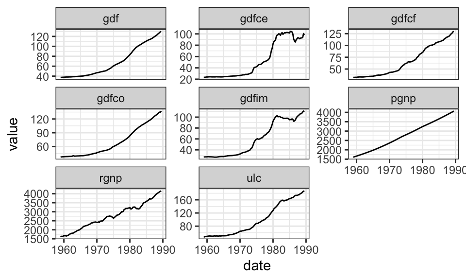
Nun soll ein Vektorautoregressionsmodell mit den Variablen rgnp, ulc und gdf berechnet werden.
daten_var <- Raotbl6 %>%
select(date, rgnp, ulc, gdf)
daten_var_trans <- daten_var %>%
mutate(rgnp = c(0, 0, 0, 0, diff(log(rgnp), 4)),
ulc = c(0, 0, 0, 0, diff(log(ulc), 4)),
gdf = c(0, 0, 0, 0, diff(log(gdf), 4))) %>%
filter(date > "1959-10-01") %>%
select(-date)
# Auswahl des besten Modells
VARselect(daten_var_trans, lag.max = 10, type = "const")$selectionAIC(n) HQ(n) SC(n) FPE(n)
7 5 1 7 R <- VAR(daten_var_trans, p = 7)
summary(R)
VAR Estimation Results:
=========================
Endogenous variables: rgnp, ulc, gdf
Deterministic variables: const
Sample size: 112
Log Likelihood: 1299.381
Roots of the characteristic polynomial:
0.9528 0.9255 0.9255 0.9025 0.9025 0.8832 0.8832 0.8817 0.8817 0.8738 0.8738 0.8233 0.8233 0.8059 0.8059 0.8053 0.8053 0.7282 0.445 0.445 0.3119
Call:
VAR(y = daten_var_trans, p = 7)
Estimation results for equation rgnp:
=====================================
rgnp = rgnp.l1 + ulc.l1 + gdf.l1 + rgnp.l2 + ulc.l2 + gdf.l2 + rgnp.l3 + ulc.l3 + gdf.l3 + rgnp.l4 + ulc.l4 + gdf.l4 + rgnp.l5 + ulc.l5 + gdf.l5 + rgnp.l6 + ulc.l6 + gdf.l6 + rgnp.l7 + ulc.l7 + gdf.l7 + const
Estimate Std. Error t value Pr(>|t|)
rgnp.l1 0.931417 0.133043 7.001 4.42e-10 ***
ulc.l1 -0.131304 0.172623 -0.761 0.44886
gdf.l1 -0.150196 0.352155 -0.427 0.67076
rgnp.l2 -0.104478 0.196658 -0.531 0.59654
ulc.l2 0.010892 0.240427 0.045 0.96397
gdf.l2 0.004823 0.584643 0.008 0.99344
rgnp.l3 -0.235903 0.190814 -1.236 0.21956
ulc.l3 -0.384017 0.224469 -1.711 0.09057 .
gdf.l3 0.594908 0.548686 1.084 0.28115
rgnp.l4 0.049052 0.195794 0.251 0.80275
ulc.l4 0.662939 0.222475 2.980 0.00371 **
gdf.l4 -1.097971 0.501966 -2.187 0.03131 *
rgnp.l5 0.160943 0.198686 0.810 0.42006
ulc.l5 -0.341975 0.252484 -1.354 0.17899
gdf.l5 0.456388 0.544686 0.838 0.40431
rgnp.l6 0.199754 0.211248 0.946 0.34689
ulc.l6 0.456815 0.280877 1.626 0.10736
gdf.l6 -0.381554 0.564097 -0.676 0.50052
rgnp.l7 -0.273171 0.143440 -1.904 0.06005 .
ulc.l7 -0.231916 0.190687 -1.216 0.22708
gdf.l7 0.362701 0.326883 1.110 0.27014
const 0.015874 0.005955 2.666 0.00911 **
---
Signif. codes: 0 '***' 0.001 '**' 0.01 '*' 0.05 '.' 0.1 ' ' 1
Residual standard error: 0.009993 on 90 degrees of freedom
Multiple R-Squared: 0.8752, Adjusted R-squared: 0.8461
F-statistic: 30.06 on 21 and 90 DF, p-value: < 2.2e-16
Estimation results for equation ulc:
====================================
ulc = rgnp.l1 + ulc.l1 + gdf.l1 + rgnp.l2 + ulc.l2 + gdf.l2 + rgnp.l3 + ulc.l3 + gdf.l3 + rgnp.l4 + ulc.l4 + gdf.l4 + rgnp.l5 + ulc.l5 + gdf.l5 + rgnp.l6 + ulc.l6 + gdf.l6 + rgnp.l7 + ulc.l7 + gdf.l7 + const
Estimate Std. Error t value Pr(>|t|)
rgnp.l1 0.226938 0.104413 2.173 0.032372 *
ulc.l1 1.122658 0.135476 8.287 1.04e-12 ***
gdf.l1 0.493846 0.276376 1.787 0.077326 .
rgnp.l2 0.017251 0.154340 0.112 0.911255
ulc.l2 -0.165542 0.188690 -0.877 0.382648
gdf.l2 -0.811071 0.458835 -1.768 0.080505 .
rgnp.l3 0.178705 0.149753 1.193 0.235876
ulc.l3 0.308535 0.176166 1.751 0.083286 .
gdf.l3 0.233391 0.430615 0.542 0.589162
rgnp.l4 -0.393359 0.153661 -2.560 0.012137 *
ulc.l4 -0.971765 0.174601 -5.566 2.67e-07 ***
gdf.l4 0.650271 0.393949 1.651 0.102297
rgnp.l5 0.457259 0.155931 2.932 0.004264 **
ulc.l5 0.957830 0.198153 4.834 5.49e-06 ***
gdf.l5 0.048604 0.427476 0.114 0.909728
rgnp.l6 -0.262274 0.165790 -1.582 0.117165
ulc.l6 -0.442885 0.220436 -2.009 0.047519 *
gdf.l6 -0.714731 0.442710 -1.614 0.109932
rgnp.l7 0.172265 0.112574 1.530 0.129463
ulc.l7 0.223518 0.149653 1.494 0.138785
gdf.l7 0.182848 0.256542 0.713 0.477851
const -0.017392 0.004674 -3.721 0.000344 ***
---
Signif. codes: 0 '***' 0.001 '**' 0.01 '*' 0.05 '.' 0.1 ' ' 1
Residual standard error: 0.007843 on 90 degrees of freedom
Multiple R-Squared: 0.9574, Adjusted R-squared: 0.9474
F-statistic: 96.29 on 21 and 90 DF, p-value: < 2.2e-16
Estimation results for equation gdf:
====================================
gdf = rgnp.l1 + ulc.l1 + gdf.l1 + rgnp.l2 + ulc.l2 + gdf.l2 + rgnp.l3 + ulc.l3 + gdf.l3 + rgnp.l4 + ulc.l4 + gdf.l4 + rgnp.l5 + ulc.l5 + gdf.l5 + rgnp.l6 + ulc.l6 + gdf.l6 + rgnp.l7 + ulc.l7 + gdf.l7 + const
Estimate Std. Error t value Pr(>|t|)
rgnp.l1 0.128854 0.042076 3.062 0.00290 **
ulc.l1 0.109174 0.054594 2.000 0.04854 *
gdf.l1 1.345271 0.111373 12.079 < 2e-16 ***
rgnp.l2 -0.130944 0.062195 -2.105 0.03804 *
ulc.l2 -0.155607 0.076037 -2.046 0.04363 *
gdf.l2 -0.402705 0.184899 -2.178 0.03202 *
rgnp.l3 0.123122 0.060347 2.040 0.04426 *
ulc.l3 0.150668 0.070990 2.122 0.03655 *
gdf.l3 0.133933 0.173527 0.772 0.44224
rgnp.l4 -0.017453 0.061922 -0.282 0.77870
ulc.l4 -0.070860 0.070360 -1.007 0.31658
gdf.l4 -0.578357 0.158752 -3.643 0.00045 ***
rgnp.l5 0.070479 0.062836 1.122 0.26501
ulc.l5 0.171962 0.079851 2.154 0.03395 *
gdf.l5 0.574494 0.172262 3.335 0.00124 **
rgnp.l6 -0.135630 0.066809 -2.030 0.04530 *
ulc.l6 -0.134128 0.088830 -1.510 0.13456
gdf.l6 -0.048853 0.178401 -0.274 0.78484
rgnp.l7 0.066312 0.045364 1.462 0.14729
ulc.l7 0.016334 0.060307 0.271 0.78713
gdf.l7 -0.113633 0.103380 -1.099 0.27462
const -0.003344 0.001883 -1.775 0.07922 .
---
Signif. codes: 0 '***' 0.001 '**' 0.01 '*' 0.05 '.' 0.1 ' ' 1
Residual standard error: 0.00316 on 90 degrees of freedom
Multiple R-Squared: 0.9851, Adjusted R-squared: 0.9816
F-statistic: 283.4 on 21 and 90 DF, p-value: < 2.2e-16
Covariance matrix of residuals:
rgnp ulc gdf
rgnp 9.986e-05 -4.608e-05 5.469e-06
ulc -4.608e-05 6.151e-05 5.572e-06
gdf 5.469e-06 5.572e-06 9.988e-06
Correlation matrix of residuals:
rgnp ulc gdf
rgnp 1.0000 -0.5879 0.1732
ulc -0.5879 1.0000 0.2248
gdf 0.1732 0.2248 1.0000roots(R) [1] 0.9527839 0.9254726 0.9254726 0.9025335 0.9025335 0.8832403 0.8832403
[8] 0.8817101 0.8817101 0.8738234 0.8738234 0.8232729 0.8232729 0.8059344
[15] 0.8059344 0.8052588 0.8052588 0.7282462 0.4450240 0.4450240 0.3119052Man merkt, dass Vektorautoregression schnell sehr unübersichtlich werden kann.
Es soll im Kontext von zwei Zeitreihen \(x_t\) und \(y_t\) untersucht werden, ob eine Kausalverbindung zwischen diesen besteht. Diese könnte entweder von \(x\) nach \(y\), umgekehrt oder in beide Richtungen verlaufen. Der Grundgedanke bei der Kausalität in diesem Fall ist, dass die Ursache der Wirkung zeitlich vorausgehen muss.
Formal kann man schreiben \(\text{Var}(y_t|y_{t-1}, y_{t-2}, …, x_{t-1}, x_{t-2}, …) < \text{Var}(y_t|y_{t-1}, y_{t-2}, …) \Rightarrow x \rightarrow y\). Das bedeutet so viel wie wenn die Prognose von y durch die Einbeziehung der Vergangenheit von x verbessert wird, dann ist x kausal für y.
Für einen einfachen Fall mit AR(1) Prozessen gilt also \[ \begin{bmatrix} y_{t}\\ x_{t} \end{bmatrix} = \begin{bmatrix} \alpha_1\\ \alpha_2 \end{bmatrix} + \begin{bmatrix} \alpha_{11} & \beta_{11}\\ \beta_{21} & \alpha_{21} \end{bmatrix} \begin{bmatrix} y_{t-1}\\ x_{t-1} \end{bmatrix} + \begin{bmatrix} u_{1t}\\ u_{2t} \end{bmatrix} \] bzw. \[ \begin{align*} y_t &= \alpha_1 + \alpha_{11}y_{t-1} + \beta_{11}x_{t-1} + u_{1t} \\ x_t &= \alpha_2 + \beta_{21}y_{t-1} + \alpha_{21}x_{t-1} + u_{2t} \end{align*} \]
Im folgenden werden je zwei Zeitreihen mit verschiedenen Koeffizientenmatrizen simuliert. Es wird von einem mittelwertbereinigten Prozess ohne Konstante (\(\alpha_1\), \(\alpha_2\)) ausgegangen.
Die Gleichung kann natürlich erweitert werden. Denkbar sind hier weitere Lags in die Vergangenheit oder der Einbezug gleichzeitiger Kausalität: \(y_t = \alpha_1 + \alpha_{11}y_{t-1} + \beta_{10}x_{t} + \beta_{11}x_{t-1} + u_{1t}\), analog für \(x_t\). Dabei ist der Wert der aktuellen Periode \(y_t\) auch vom aktuellen Wert der Periode \(x_t\) abhängig (und umgekehrt).
In diesem Beispiel sind beide Zeitreihen unabhängige AR(1) Prozesse.
set.seed(3)
B1 <- rbind(
c(0.7, 0.0),
c(0.0, 0.7)
)
var <- VAR.sim(B=B1, n=100, include="none")
var %>%
data.frame() %>%
rename("x" = X1, "y" = X2) %>%
mutate(t = 1:nrow(.)) %>%
pivot_longer(cols = -t) %>%
ggplot(aes(x = t, y = value, color = name))+
geom_line()+
coord_cartesian(ylim = c(-5, 6))+
theme_bw()+
theme(legend.position = "top",
legend.title = element_blank())In diesem Beispiel hat Zeitreihe \(x\) einen (geringen) Einfluss auf \(y\), aber nicht umgekehrt.
set.seed(3)
B1 <- rbind(
c(0.7, 0.0),
c(0.5, 0.7)
)
var <- VAR.sim(B=B1, n=100, include="none")
var %>%
data.frame() %>%
rename("x" = X1, "y" = X2) %>%
mutate(t = 1:nrow(.)) %>%
pivot_longer(cols = -t) %>%
ggplot(aes(x = t, y = value, color = name))+
geom_line()+
coord_cartesian(ylim = c(-5, 6))+
theme_bw()+
theme(legend.position = "top",
legend.title = element_blank())In diesem Beispiel hat Zeitreihe \(x\) einen Einfluss auf \(y\), aber nicht umgekehrt.
set.seed(3)
B1 <- rbind(
c(0.7, 0.0),
c(0.9, 0.7)
)
var <- VAR.sim(B=B1, n=100, include="none")
var %>%
data.frame() %>%
rename("x" = X1, "y" = X2) %>%
mutate(t = 1:nrow(.)) %>%
pivot_longer(cols = -t) %>%
ggplot(aes(x = t, y = value, color = name))+
geom_line()+
coord_cartesian(ylim = c(-5, 6))+
theme_bw()+
theme(legend.position = "top",
legend.title = element_blank())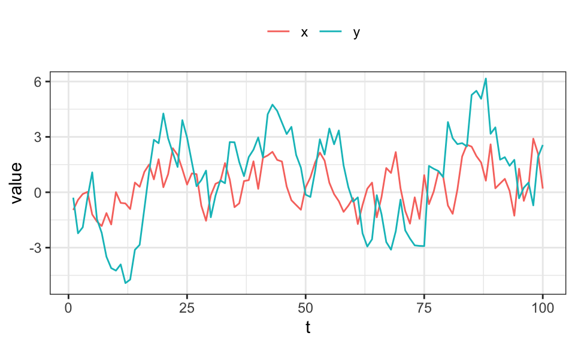
In diesem Beispiel hat Zeitreihe \(x\) einen Einfluss auf \(y\) und \(y\) hat gleichzeitig einen Einfluss auf \(x\)
set.seed(3)
B1 <- rbind(
c(0.7, -0.5),
c(0.5, 0.7)
)
var <- VAR.sim(B=B1, n=100, include="none")
var %>%
data.frame() %>%
rename("x" = X1, "y" = X2) %>%
mutate(t = 1:nrow(.)) %>%
pivot_longer(cols = -t) %>%
ggplot(aes(x = t, y = value, color = name))+
geom_line()+
coord_cartesian(ylim = c(-5, 6))+
theme_bw()+
theme(legend.position = "top",
legend.title = element_blank())In diesem Fall scheint eine Koeffizientenmatrix mit \(0.5\) statt \(-0.5\) zu einem nicht-stationären Prozess zu führen.
In diesem Beispiel ist \(x\) ein AR(1) Prozess mit \(\rho = 0\) (weißes Rauschen) und hat einen Einfluss auf \(y\).
set.seed(3)
B1 <- rbind(
c(0.0, 0.0),
c(0.9, 0.0)
)
var <- VAR.sim(B=B1, n=100, include="none")
var %>%
data.frame() %>%
rename("x" = X1, "y" = X2) %>%
mutate(t = 1:nrow(.)) %>%
pivot_longer(cols = -t) %>%
ggplot(aes(x = t, y = value, color = name))+
geom_line()+
coord_cartesian(ylim = c(-5, 6))+
theme_bw()+
theme(legend.position = "top",
legend.title = element_blank())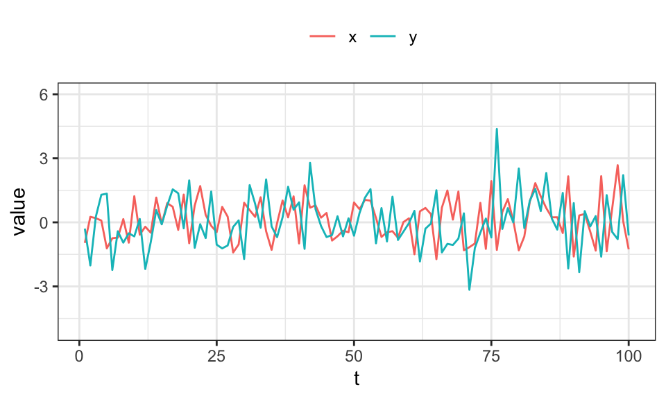
In einem Modell mit \[\begin{align*} y_t &= \alpha_1 + \alpha_{11}y_{t-1} + \alpha_{12}y_{t-2} + \beta_{11}x_{t-1} + \beta_{12}x_{t-2} + u_{1t} \\ x_t &= \alpha_2 + \beta_{21}y_{t-1} + \beta_{22}y_{t-2} + \alpha_{21}x_{t-1} + \alpha_{22}x_{t-2} + u_{2t} \end{align*}\] kann nun getestet werden, ob \(x\) einen Einfluss auf \(y\) hat: \(H_0: x \nrightarrow y\) bzw. \(H_0: \beta_{11} = \beta_{12} = 0\). Bei verwerfen gilt \(H_1: x \rightarrow y\).
Zuerst generieren wir zwei Zeitreihen \(x\) und \(y\), wobei \(x \rightarrow y\) aber nicht umgekehrt. Dann werden die (restringierten) Regressionsmodelle aufgestellt. Und mit einem F-Test getestet.
set.seed(1)
n <- 1000
u_x <- rnorm(n, mean = 0, sd = 3)
u_y <- rnorm(n, mean = 0, sd = 3)
x <- numeric(n)
y <- numeric(n)
for(t in 3:n){
x[t] <- 0.7*x[t-1] + -0.3*x[t-2] + u_x[t]
y[t] <- 0.7*y[t-1] + 0.2*y[t-2] + 0.5*x[t-1] + u_y[t]
}
#data.frame(x,y) %>%
# mutate(t = 1:nrow(.)) %>%
# pivot_longer(cols = -t) %>%
# ggplot(aes(x = t, y = value, color = name))+
# geom_line()+
# #coord_cartesian(ylim = c(-5, 6))+
# theme_bw()+
# theme(legend.position = "top",
# legend.title = element_blank())
data <- data.frame(x,y) %>%
mutate(x_l1 = lag(x, n = 1),
y_l1 = lag(y, n = 1),
x_l2 = lag(x, n = 2),
y_l2 = lag(y, n = 2)) %>%
drop_na()
R1 <- lm(x ~ x_l1 + y_l1 + x_l2 + y_l2, data = data)
R2 <- lm(y ~ x_l1 + y_l1 + x_l2 + y_l2, data = data)
R1_restricted <- lm(x ~ x_l1 + x_l2, data = data)
R2_restricted <- lm(y ~ y_l1 + y_l2, data = data)
print(linearHypothesis(R1, c("y_l1 = 0", "y_l2 = 0"), restricted = R1_restricted))Linear hypothesis test
Hypothesis:
y_l1 = 0
y_l2 = 0
Model 1: restricted model
Model 2: x ~ x_l1 + y_l1 + x_l2 + y_l2
Res.Df RSS Df Sum of Sq F Pr(>F)
1 995 9596.5
2 993 9592.3 2 4.2491 0.2199 0.8026print(linearHypothesis(R2, c("x_l1 = 0", "x_l2 = 0"), restricted = R2_restricted))Linear hypothesis test
Hypothesis:
x_l1 = 0
x_l2 = 0
Model 1: restricted model
Model 2: y ~ x_l1 + y_l1 + x_l2 + y_l2
Res.Df RSS Df Sum of Sq F Pr(>F)
1 995 13459.9
2 993 9643.9 2 3816 196.46 < 2.2e-16 ***
---
Signif. codes: 0 '***' 0.001 '**' 0.01 '*' 0.05 '.' 0.1 ' ' 1Wie zu erwarten verwirft der F-Test für \(x\) die Nullhypothese nicht (p-Wert von \(0.8\)). Bei \(y\) verwirft der F-Test die Nullhypothese nicht, das heißt \(y\) hängt von \(x\) ab, bzw. \(x\) hat kausalen Einfluss auf \(y\).
Ein VAR(p) Modell lässt sich - ähnlich zu einem AR(p) - Modell als unendlicher (Vektor)-Moving-Average Prozess VMA(∞) darstellen: \[\mathbf{y}_t = \mathbf{\mu} + \mathbf{u}_t + \mathbf{B}_1 \mathbf{u}_{t-1} + \mathbf{B}_2 \mathbf{u}_{t-2} + …\] mit \[\mathbf{B}_h = \begin{bmatrix} \partial \mathbf{y}_{1,t+h} / \partial \mathbf{u}_{1t} & \ldots & \partial \mathbf{y}_{1,t+h} / \partial \mathbf{u}_{mt} \\ \vdots & \ddots & \vdots \\ \partial \mathbf{y}_{m,t+h} / \partial \mathbf{u}_{1t} & \ldots & \partial \mathbf{y}_{m,t+h} / \partial \mathbf{u}_{mt} \end{bmatrix}\]
Die Einträge können dabei wie folgt interpretiert werden: Zeile \(i\), Spalte \(j\) gibt den Effekt einer Erhöhung des \(j\)-ten Residuums (Schock) um eine Einheit auf die \(i\)-te Variable nach \(h\) Perioden an.
Zum Berechnen dieser Matrix \(\mathbf{B}_h\) muss zuerst die Koeffizientenmatrix geschätzt werden. Es wird eines der oberen Beispiele mit \(\begin{bmatrix} 0.7 & 0 \\ 0.9 & 0.7 \end{bmatrix}\) verwendet, diesmal jedoch mit \(n = 1000\) Beobachtungen.
set.seed(3)
B1 <- rbind(
c(0.7, 0.0),
c(0.9, 0.7)
)
var <- VAR.sim(B=B1, n=1000, include="none")
colnames(var) <- c("x", "y")
R <- VAR(var, p = 1, type = "const")
R
VAR Estimation Results:
=======================
Estimated coefficients for equation x:
======================================
Call:
x = x.l1 + y.l1 + const
x.l1 y.l1 const
0.681844193 0.002830106 -0.002314831
Estimated coefficients for equation y:
======================================
Call:
y = x.l1 + y.l1 + const
x.l1 y.l1 const
0.87657900 0.69214118 -0.01188907 Vergleicht man die Schätzwerte mit den tatsächlichen Werten, so werden diese ziemlich gut getroffen.
plot(vars::irf(R, impulse = "x", response = "y"))Eine Veränderung der Schocks in \(x\) führen zu einer Veränderung in \(y\).
plot(vars::irf(R, impulse = "y", response = "x"))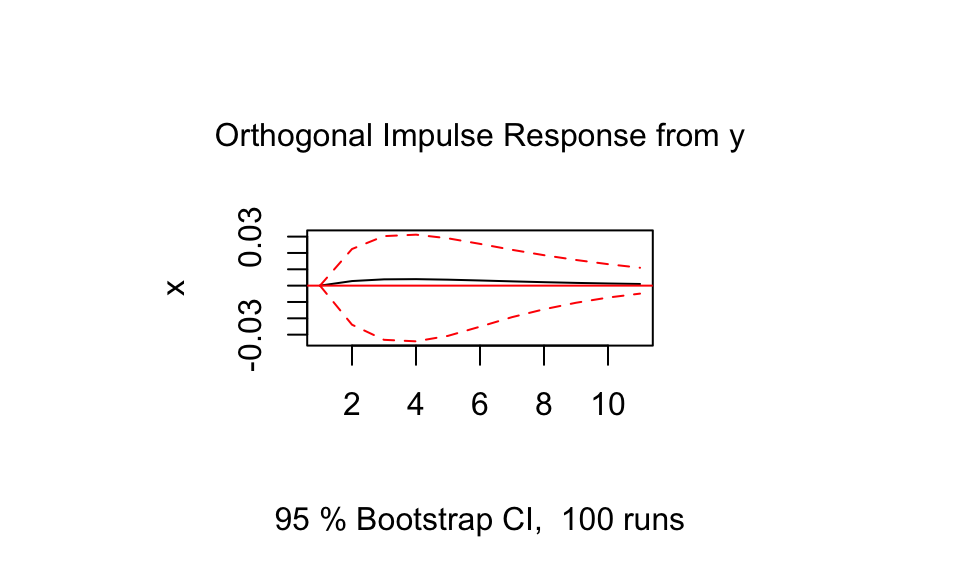
Wie zu erwarten verläuft die Kurve der Impuls-Antwort-Funktion von \(y\) auf \(x\) flach. Eine Veränderung der Schocks in \(y\) hat also keinen Einfluss auf den Verlauf von \(x\).
Nun kann auch die \(\mathbf{B}_h\) Matrix bestimmt werden. Hier wird \(h = 0\) und \(h = 2\) benutzt.
B_raw <- vars::irf(R, n.ahead = 5)
#B_raw$irf
B_0 <- rbind(
(B_raw$irf$x)[1,],
(B_raw$irf$y)[1,]
)
round(B_0, 2) x y
[1,] 1.01 0.00
[2,] 0.00 0.99B_2 <- rbind(
(B_raw$irf$x)[3,],
(B_raw$irf$y)[3,]
)
round(B_2, 2) x y
[1,] 0.47 1.21
[2,] 0.00 0.48Die Matrizen können wie folgt interpretiert werden:
| x | y | |
|---|---|---|
| x | \(x_t \rightarrow x_{t+h}\) | \(x_t \rightarrow y_{t+h}\) |
| y | \(y_t \rightarrow x_{t+h}\) | \(y_t \rightarrow y_{t+h}\) |
Die Matrix für \(h=0\) ist dabei denkbar einfach: Eine Erhöhung des Schocks der aktuellen Periode um \(1\) erhöht \(x_t\) aus der aktuellen Periode (bzw. \(y_t\)) um \(\approx 1\). Addiert man also \(1\) zu \(x_t\) ist das Ergebnis \(x_t + 1\). Da es keine Interaktionen zwischen \(x_t\) und \(y_t\) (aus der selben Periode) gibt, sind die Werte hier \(\approx 0\).
Die Matrix für \(h=2\) kann wie folgt erklärt werden: Eine Erhöhung des Schocks in \(x_t\) um 1 führt zu einer Erhöhung von \(x_{t+2}\) um \(\approx 0.49\). Dies folgt aus der Koeffizientenmatrix bzw. \(\rho = 0.7\) und \(\rho^2 = 0.49 \approx 0.47\). Das gleiche gilt für \(y_t\) und \(y_{t+2}\). Die \(1.2\) ist der Einfluss auf \(y_{t+2}\) bei einer Erhöhung des Residuums bei \(x_t\) um \(1\). Der Effekt hat sich also verstärkt. Dies ist auch in der Impuls-Antwort-Funktion oben zu sehen, verschindet aber nach einigen Perioden wieder.
Von Unit Root Prozessen wird dann gesprochen, wenn die Lösungen für die charakteristische Gleichung genau auf dem Einheitskreis liegen. Für ein AR(1) Modell ist dies der Fall wenn \(\rho = 1\) ist. Dann handelt es sich um einen nichtstationären Prozess. MA() Prozesse sind immer stationär. Das besondere an nichtstationären Prozessen ist, dass die Wirkung vergangener Schocks nicht abklingt.
Natürlich können nichtstationäre Prozesse durch Differenzenbildung in stationäre Prozesse umgewandelt werden (siehe oben). Dadurch gehen dann allerdings auch Informationen über das absolute Niveau verloren.
Im folgenden wird ein AR(1) Prozess mit deterministischen Trend (\(y_t = \mu + \delta t + \rho y_{t-1} + u_t\), \(|\rho| < 1\)) und ein Unit Root Prozess (\(y_t = \delta + y_{t-1} + u_t\)) simuliert. Dabei werden jeweils die gleichen Störterme/Schocks \(u\) verwendet.
set.seed(1)
n <- 200
u <- rnorm(n, mean = 0, sd = 2)
y_det <- numeric(n)
y_stoch <- numeric(n)
for(t in 2:n){
y_det[t] <- 0.1*t + 0.5*y_det[t-1] + u[t]
y_stoch[t] <- 0.2 + y_stoch[t-1] + u[t]
}
data.frame(y_det, y_stoch) %>%
rename("Stochastisch" = y_stoch, "Deterministisch" = y_det) %>%
mutate(t = 1:nrow(.)) %>%
pivot_longer(cols = -t) %>%
ggplot(aes(x = t, y = value, color = name))+
geom_line()+
theme_bw()+
theme(legend.position = "top",
legend.title = element_blank())Beim Dickey-Fuller-Test (DF-Test) wird das Modell \(\Delta y_t = \phi y_{t-1}\) mit OLS geschätzt. Im Anschluss wird die Nullhypothese \(H_0: \phi = 0\) vs \(H_1: \phi < 0\) getestet. Für den Fall \(\phi = 0\) liegt ein Unit-Root Prozess vor, da in diesem Fall die Wirkung vergangener Schocks nicht kleiner wird.
Der augmented Dickey-Fuller-Test (ADF-Test) werden zusätzlich die Einflüssen autokorrelierter Residuen herausgerechnet.
set.seed(3)
n <- 200
u <- rnorm(n, mean = 0, sd = 10)
y <- numeric(n)
for(t in 2:n){
y[t] <- 1 + y[t-1] + u[t]
}
plot(y, type = "l")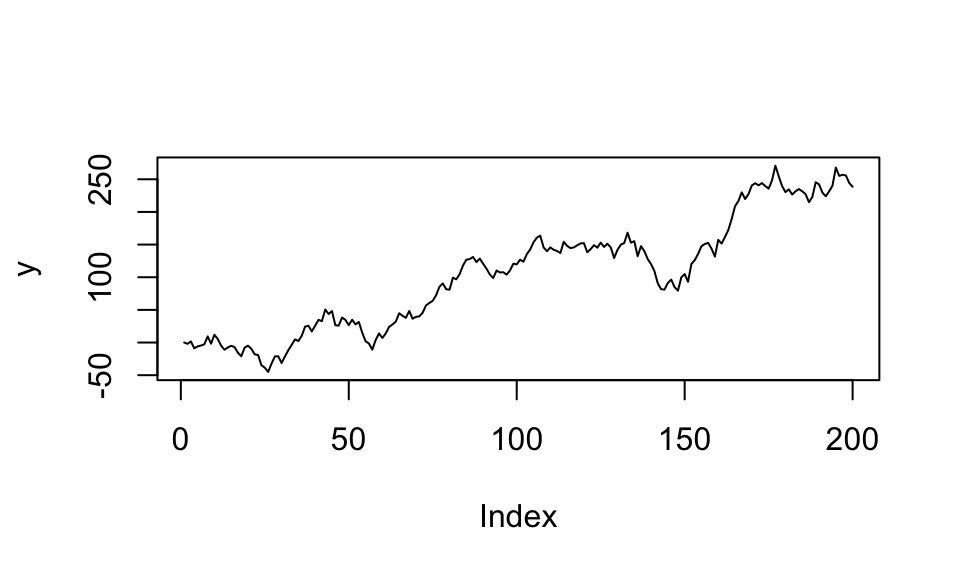
R <- ur.df(y, type = "drift", lags = 1, selectlags = "Fixed")
summary(R)
###############################################
# Augmented Dickey-Fuller Test Unit Root Test #
###############################################
Test regression drift
Call:
lm(formula = z.diff ~ z.lag.1 + 1 + z.diff.lag)
Residuals:
Min 1Q Median 3Q Max
-24.0397 -7.6032 0.6935 7.0213 27.0116
Coefficients:
Estimate Std. Error t value Pr(>|t|)
(Intercept) 1.661137 1.109756 1.497 0.136
z.lag.1 -0.004556 0.008304 -0.549 0.584
z.diff.lag 0.021567 0.071879 0.300 0.764
Residual standard error: 9.887 on 195 degrees of freedom
Multiple R-squared: 0.001871, Adjusted R-squared: -0.008366
F-statistic: 0.1828 on 2 and 195 DF, p-value: 0.8331
Value of test-statistic is: -0.5487 1.5678
Critical values for test statistics:
1pct 5pct 10pct
tau2 -3.46 -2.88 -2.57
phi1 6.52 4.63 3.81Achtung: Die p-Werte dürfen nicht verwendet werden. Stattdessen müssen die t-Werte mit den kritischen Werten am Ende des Outputs verglichen werden. Ist der t-Wert betragsmäßig größer als der kritische Wert, so wird die Nullhypothese (Unit-Root-Prozess) verworfen.
Wertden beim ADF-Test zu viele Lags mit einbezogen, so erhöht sich die Varianz der Schätzung und der Test verliert an Trennschärfe. In anderen Worten, wenn zu viele Lags in den ADF-Test einbezogen werden, wird die Nullhypothese eher akzeptiert, selbst wenn sie falsch ist (d.h.Wahrscheinlichkeit eines Fehlers 2. Art wird größer).Werden hingegen zu wenige Lags einbezogen, so ist die Schätzung verzerrt und der Test invalide.
In diesem Fall wird die korrekte Anzahl an Lags einbezogen und \(H_0: \phi = 0\) (Unit-Root-Fall) wird nicht verworfen, da \(|-0.549| < |-2.88|\).
Ein Unit-Root-Prozess kann als MA(∞) geschrieben werden: \(x_t = x_0 + u_t + u_{t-1} + … + u_1\). Das stellt die Summe aller vergangener Schocks da. Jedes \(u\) hat den Erwartungswert \(E(u_i) = 0\). Lässt man nun \(x_0\) weg, kann man auch schreiben \(E(x_t) = \sum_{i=1}^{t} E(u_i) = 0\). Das sieht ja erstmal nach Stationarität aus. Man muss allerdings auch die Varianz betrachten. Mit \(Var(u_i) = \sigma^2\) und dem Fakt dass die Schocks iid verteilt sind folgt \[ \begin{align*} Var(x_t) &= Var(u_t) + Var(u_{t-1}) + … + Var(u_1) \\ &= \sum_{i=1}^{t} Var(u_i) \\ &= t\sigma^2 \end{align*} \] Somit hängt die Varianz also vom Zeitpunkt ab.
Simuliert sieht das wie folgt aus:
set.seed(1)
n <- 100
u <- numeric(n)
for(t in 1:n){
u[t] <- rnorm(1, mean = 0, sd = t)
}
y <- cumsum(u)
data.frame(y) %>%
mutate(t = 1:nrow(.)) %>%
ggplot(aes(x = t, y = y))+
geom_line()+
theme_bw()+
theme(legend.position = "top",
legend.title = element_blank())
Noch einmal ausdrücklich: Dieser Prozess entsteht rein aus Residuen / Schocks mit einem Erwartungswert von Null!
Simulieren von \(\phi\) in \(\Delta y_t = \phi y_{t-1} + u_t\)
set.seed(1)
n <- 200
y <- numeric(n)
u <- rnorm(n, mean = 0, sd = 1)
phi <- -0.2
for(t in 2:n){
delta <- phi*y[t-1] + u[t]
y[t] = y[t-1] + delta
}
plot(y, type = "l")set.seed(1)
n <- 200
y <- numeric(n)
u <- rnorm(n, mean = 0, sd = 1)
phi <- 0
for(t in 2:n){
delta <- phi*y[t-1] + u[t]
y[t] = y[t-1] + delta
}
plot(y, type = "l")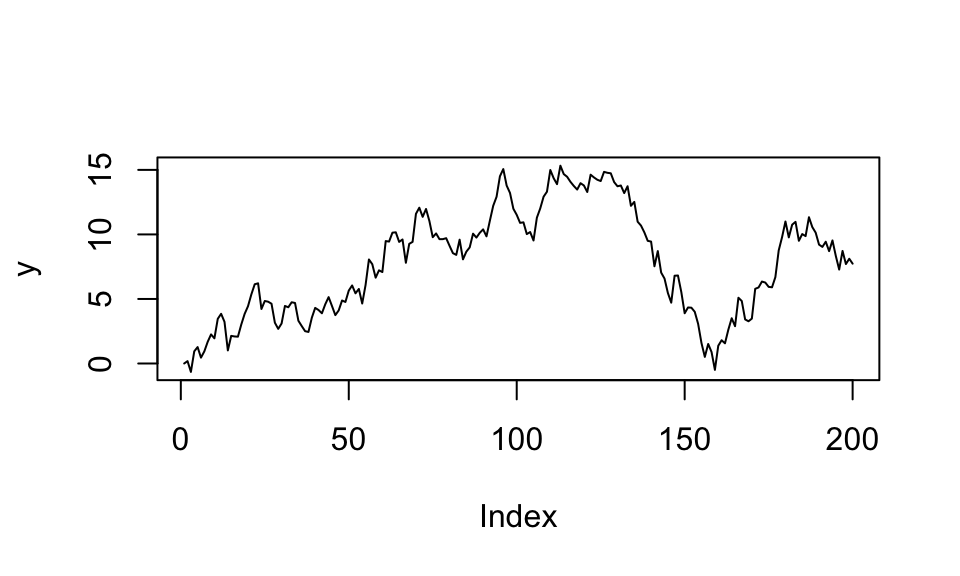
Die meisten hier behandelten Zeitreihen sind vom Integrationsgrad I(1), d.h. sie müssen einmal differenziert werden um eine stationäre Zeitreihe zu bilden. I(2) Prozesse hingegeben benötigen eine zweifache Differenzierung zur Stationarität.
n <- 100
u <- rnorm(n, mean = 0, sd = 3)
y <- cumsum(u + 1)
y2 <- cumsum(y + 1)
y3 <- diff(y2, differences = 2) # Zweifache Differenzierung
par(mfrow = c(1, 3))
plot(y, type = "l")
plot(y2, type = "l")
plot(y3, type = "l")Scheinregressionen können schnell entstehen, wenn zwei nichtstationäre Zeitreihen (Unit-Root-Prozesse) aufeinander regressiert werden. In diesem Beispiel werden zwei Zeitreihen x und y vollkommen unaghängig voneinander simuliert.
set.seed(3)
n <- 100
u1 <- rnorm(n, mean = 0, sd = 3)
u2 <- rnorm(n, mean = 0, sd = 3)
y <- numeric(n)
x <- numeric(n)
for(t in 2:n){
y[t] <- .5 + y[t-1] + u1[t]
x[t] <- .5 + x[t-1] + u2[t]
}
data.frame(x, y) %>%
mutate(t = 1:nrow(.)) %>%
pivot_longer(cols = -t) %>%
ggplot(aes(x = t, y = value, color = name))+
geom_line()+
theme_bw()+
theme(legend.position = "top",
legend.title = element_blank())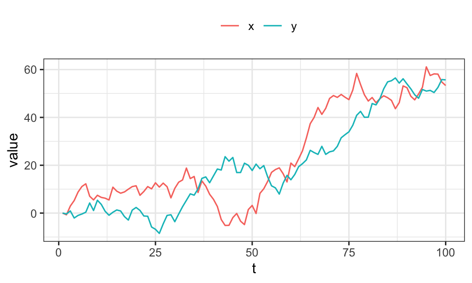
R <- lm(y~x)
summary(R)
Call:
lm(formula = y ~ x)
Residuals:
Min 1Q Median 3Q Max
-18.634 -8.322 -2.467 8.524 26.270
Coefficients:
Estimate Std. Error t value Pr(>|t|)
(Intercept) 1.44788 1.68546 0.859 0.392
x 0.79921 0.05384 14.845 <2e-16 ***
---
Signif. codes: 0 '***' 0.001 '**' 0.01 '*' 0.05 '.' 0.1 ' ' 1
Residual standard error: 11 on 98 degrees of freedom
Multiple R-squared: 0.6922, Adjusted R-squared: 0.6891
F-statistic: 220.4 on 1 and 98 DF, p-value: < 2.2e-16Eine Regression findet trotzdem einen stark signifikanten Zusammenhang.
Bei Kointegration kann eine Zeitreihe als eine Linearkombination von anderen Zeitreihen dargestellt werden. Im einfachsten Fall mit zwei Zeitreihen kann dies wie folgt aussehen.
set.seed(3)
n <- 100
u1 <- rnorm(n, mean = 0, sd = 3)
u2 <- rnorm(n, mean = 0, sd = 5)
y <- numeric(n)
x <- numeric(n)
for(t in 2:n){
x[t] <- .5 + x[t-1] + u[t]
}
y <- 5 + 2*x + u2
data.frame(x,y) %>%
mutate(t = 1:nrow(.)) %>%
pivot_longer(cols = -t) %>%
ggplot(aes(x = t, y = value, color = name))+
geom_line()+
theme_bw()+
theme(legend.position = "top",
legend.title = element_blank())Es ist leicht erkennbar, dass y in einem gewissen Rahmen x folgt.